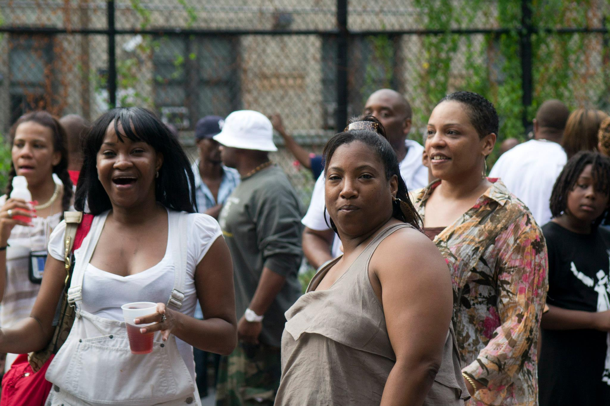
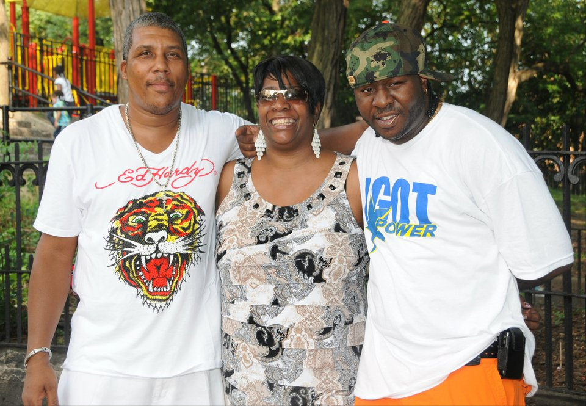
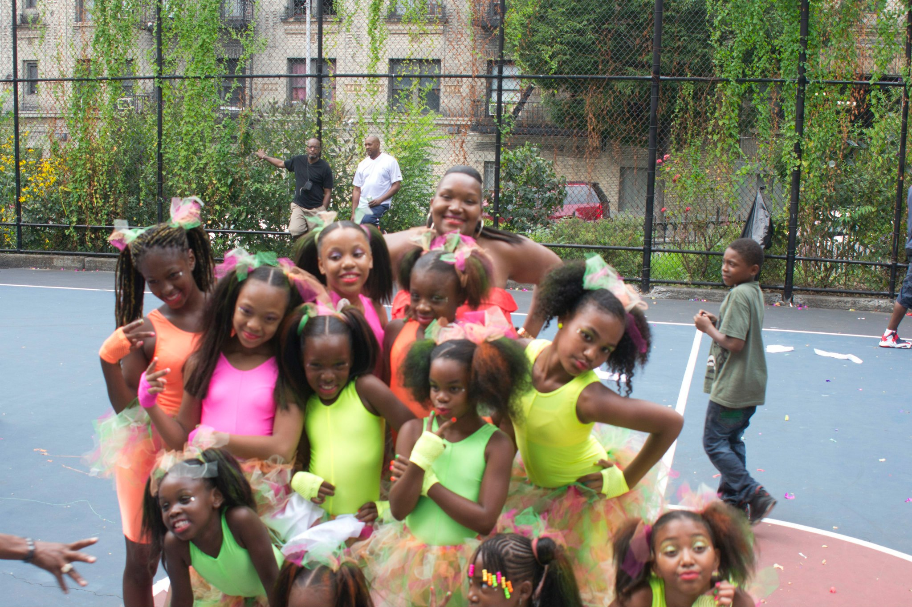

Be It.
The story of who we are and where we come from.
There Is a Sound
Da Hill Makes
It is low and full of color. Vibrant and bold. The sense of family fills the air as soon as you turn up St. Nicholas Ave. and 127th Street traveling west. You can feel the energy and the love — but only if you come in peace.
Da Hill is known as the Wild Wild West — a neighborhood made famous by our very own Kool Mo Dee. A place where community wasn't a word, it was a way of life. Where the courts, the stoops, and the terraces were the living rooms of an entire generation.

The Neighborhood
St. Nicholas Terrace runs along the eastern edge of St. Nicholas Park in Harlem, New York City. From 127th Street to 141st Street, these blocks have been home to generations of families who built something rare in a city that never stops moving — a genuine sense of belonging.
From Convent Avenue to St. Nicholas Ave, from 127th to 130th Streets, this neighborhood carries the weight of history and the lightness of laughter. Block parties that lasted until the streetlights couldn't compete. Music spilling out of windows. Children running until their mothers called them home.
"The block wasn't just where we lived. It was who we were."

The People
We are very fortunate to have several matriarchal figures in our neighborhood — women who held the community together with grace, strength, and an unshakeable sense of purpose. They watched over everyone's children. They fed strangers. They showed up.
And the men — the fathers, brothers, uncles, and friends — who stood on corners not out of idleness but out of community. Who showed young boys what it meant to be present, to be proud, to be from somewhere that meant something.
"We are very fortunate to have matriarchal figures in our neighborhood — pillars of strength who have held this community together across generations."
Da Hill was diverse before diversity was a talking point. Black, Latino, Caribbean — all living, arguing, laughing, and loving on the same few blocks. That was the texture of the Hill.

The Vision
Our Vision is to be a community that fosters the growth of our children, respects the diversity and humanity of all residents and non-residents, and looks towards our elders for the resilience and strength to move forward in power.
It is a vision rooted not in nostalgia but in intention. The Hill was not perfect — no community is. But it was real. And real things, when they are good, deserve to be preserved, celebrated, and passed on.
"Vision Be it! Mission Do it! Reunion See it!"
We see a future where every child who grows up in this neighborhood — or who carries its memory wherever they've gone — knows that they come from somewhere powerful. Somewhere worth returning to.
Add to images/ folder
Moving Forward
Da Hill Reunion was born from a simple but powerful idea: that the bonds formed on these blocks don't expire. That the love we built here travels with us — to Atlanta, to the Bronx, to Los Angeles, to wherever life carried us.
The Reunion is not just an event. It is a declaration. A refusal to let time and distance dissolve what we built together. A commitment to show our children that community is not a relic of the past — it is a choice we make every day.
This is why we gather. This is why we remember. This is why we return.
See Upcoming Events →Our Journey
Da Hill Timeline
St. Nicholas Terrace becomes home to generations of Harlem families. A neighborhood builds its identity — block by block, family by family.
Harlem's own Kool Mo Dee brings national attention to the energy and culture of St. Nicholas Terrace. Da Hill becomes known far beyond its borders.
Community members near and far come together for the first Da Hill Reunion — a celebration of love, memory, and the unbreakable bonds of the neighborhood.
The Hill Foundation is established — formalizing the community's commitment to scholarships, health and wellness, and the next generation of Da Hill leaders.
Da Hill Reunion continues to grow — bringing family home every year and building the foundation for the next generation of community leaders, scholars, and healers.
Come Back Home
Whether you grew up on Da Hill or just discovered your roots — this community is yours. Join the family.
Connect With Da Hill →